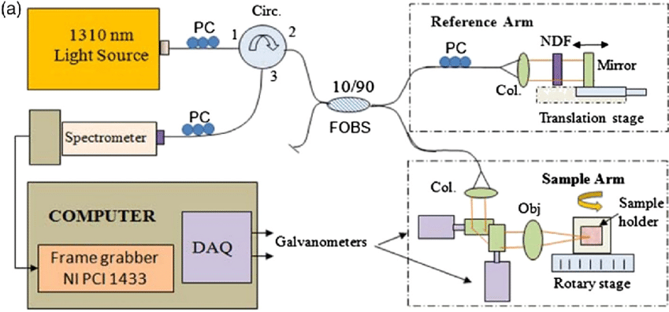
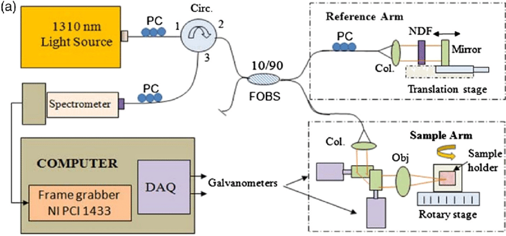

Medical Image Processing

CONTACT
Address:Qufu Normal University (Rizhao Campus), Rizhao, Shandong Province, China
Email:
mafei0603@163.com

Medical Image Processing |
||
|---|---|---|
| Optical coherence tomography (OCT) is a new noninvasive imaging technique used in the medical field. OCT can be described as an ultrasonic scan using light instead of sound. | ||
|
 |
CONTACTAddress:Qufu Normal University (Rizhao Campus), Rizhao, Shandong Province, China Email: mafei0603@163.com |
|
|